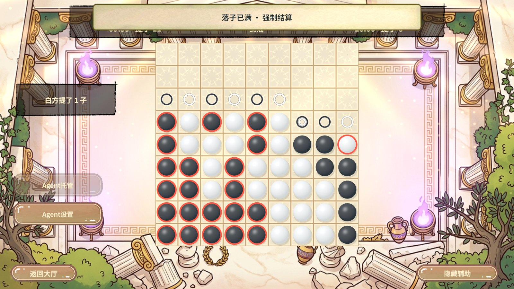
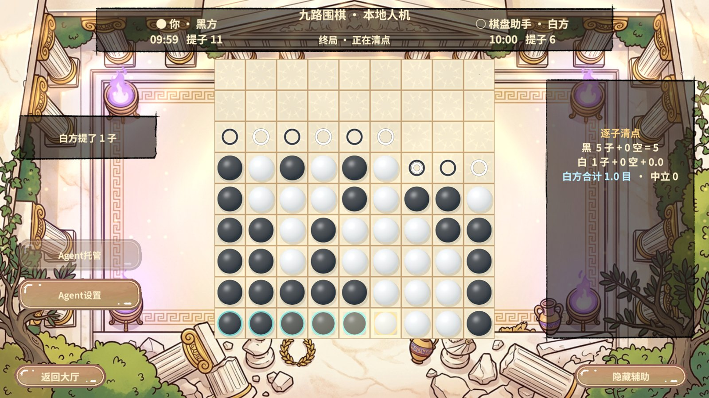
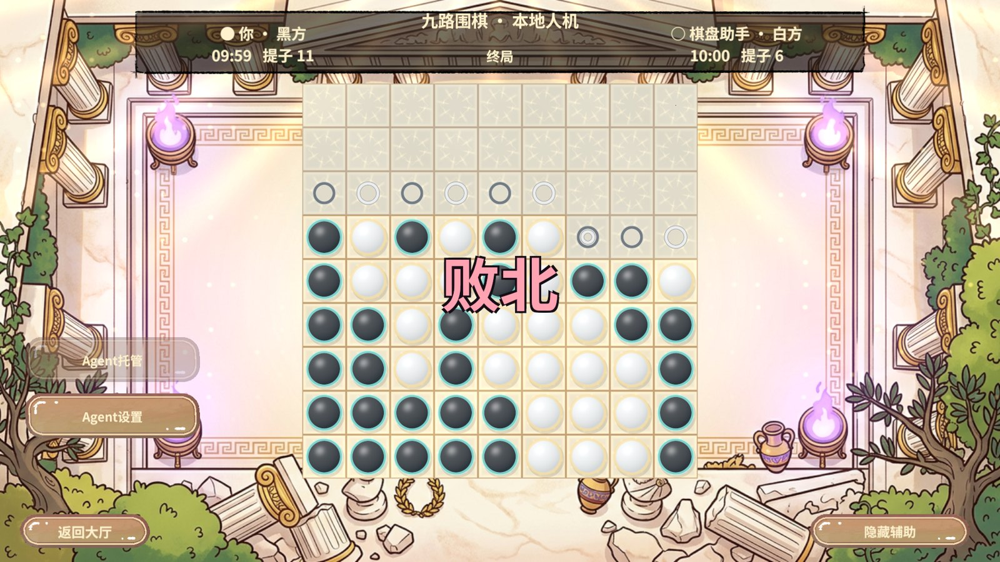
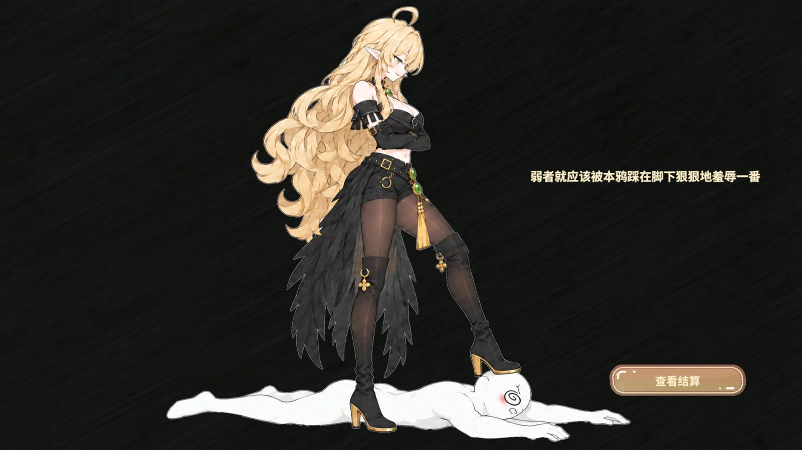
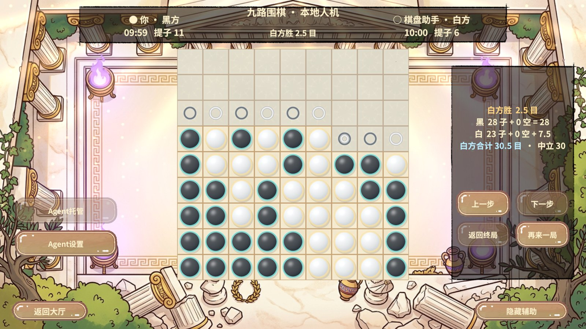
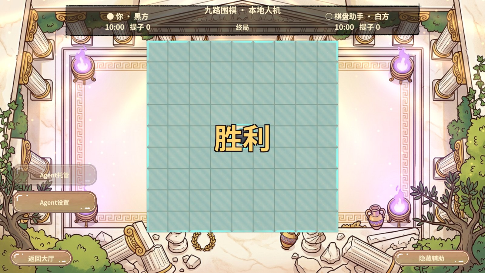
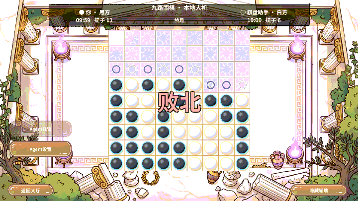

对局与界面
| 入口 | 实测结果 |
|---|---|
| 本地人机 · 68 手 | 第 68 手进入 Finished / Scored，操作序号和棋谱条数均为 68，额外确认命令被拒绝。顶部弹幕、逐棋清点、败北大字、败北面板依次出现。通过 EventSystem 点击「查看结算」后出现复盘入口。 |
| 本地人机 · 双停 | 固定白方停一手响应，黑方接着停一手后立即计分。清点后出现「胜利」，大字退场后直接显示结算与复盘入口。 |
| 局域网 UTP | 同一 Unity 进程中的两套真实网络对局服务通过 18 项断言。两端终局序号均为 68，指纹均为 11818142770247428196，获胜方均为白方，会话清理通过。 |
| 服务器 KCP | 隔离服务器和两名真实 KCP 客户端完成一局 68 手对局。收到 68 条应答与 68 条对端推送，计分确认请求为 0。双方棋谱校验、断线重连恢复终局和会话清理均通过。 |
贴目按原规则计算，强制结算使用终局盘面上的棋子与归属点。本地双人练习仍可协商死子。协议升级为 revgo-2，联机时双方与服务端须使用对应版本。
Unity 实拍
原始分辨率为 1920 × 1080。截图压缩为宽度不超过 1600 像素的 JPEG。动图由连续实拍帧合成，播放节奏仅供观察转场。DOTween 的静止区间配置为 1.5 秒。













测试入口和范围
rev_discover 发现 Unity Editor 和 Play 注册能力，rev_call 依次执行 editor.play、pvp.enter。rev_run 通过 pvp.computer、pvp.force-score-local、pvp.presentation 和 pvp.lan-agent-long 执行 63 个步骤。确认 Unity 错误日志为 0、返回大厅，并在 finally 停止 Play。
界面在 Unity 2022.3.15f1c1 的本地人机实测，两个联机通道验证规则与同步。PC 和 Android 的字库资源包均已重建，Android 本次仅构建资源包。线上部署未执行。